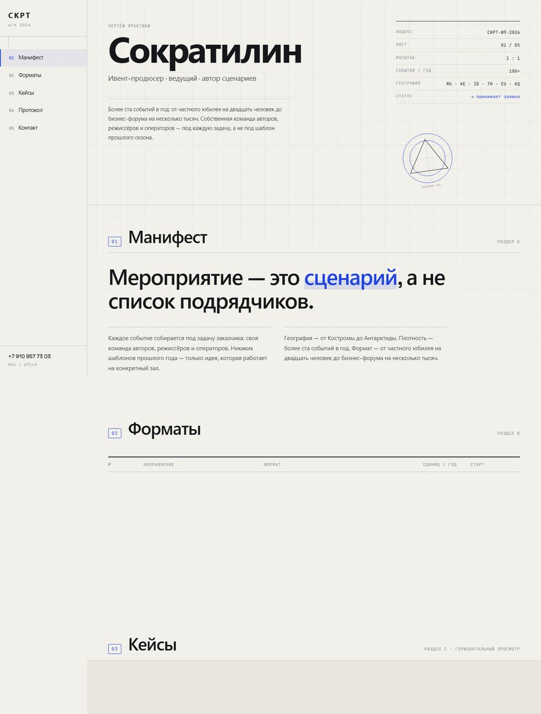
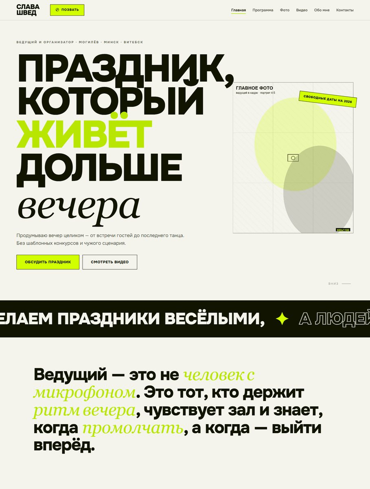
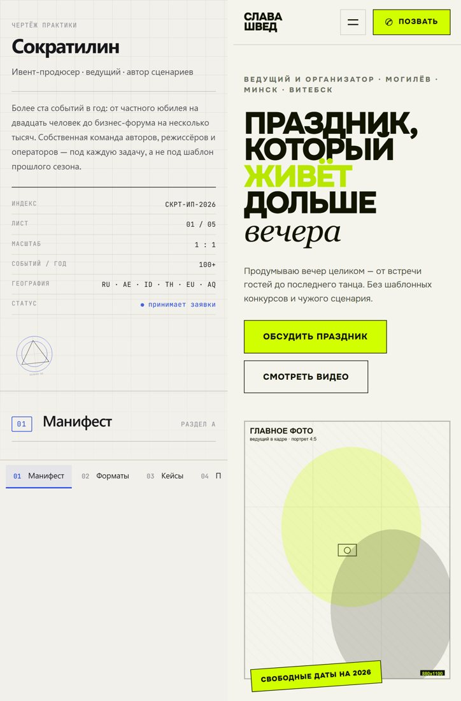

CASE 08 / classic
Статические сайты
Two sites built by hand — HTML, CSS, a little SVG and JS, zero frameworks and zero third-party libraries. They use two different visual languages on purpose, to show range rather than one trick twice: "Sokratilin" — an e
0third-party libraries
0 pxhorizontal scroll
390 pxmobile layout
Problem
A business-card site on a website builder carries hundreds of KB of engine and gives no control over typography or responsive behaviour. But "hand-coded" too often means either a framework or a pile of hacks.
Approach
Two sites built by hand — HTML, CSS, a little SVG and JS, zero frameworks and zero third-party libraries. They use two different visual languages on purpose, to show range rather than one trick twice: "Sokratilin" — an engineering-drawing concept (graph paper, a side register, a sticky case strip); "Slava Shved" — 6 pages of poster typography, torn edges, a masonry gallery and filters. "Sokratilin" — the engineering-drawing concept "Slava Shved" — poster typography, 6 pages Mobile layout — 390 px, no horizontal scroll
Evidence



Stack
чистый HTML5CSS3 (grid, clamp, aspect-ratio, sticky, IntersectionObserver)инлайн SVGJavaScript без библиотекгенератор страниц на Python. Публичный: github.com/kukhtik/site-concepts
Links
Source: README.ru.md § Статические сайты